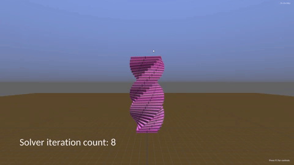
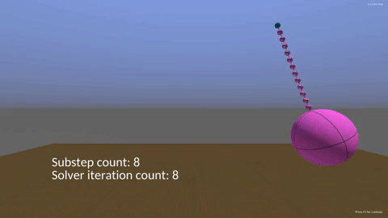

Simulation Quality and Stability Tips
Constraint Stabilization
If you are observing ununsual oscillations, bouncing, or outright explosions, constraints are likely related.
Most constraint-related stability issues take one of two forms:
- Failure to completely propagate forces through the constraint graph.
- Excessive constraint stiffness.
Incomplete force propagation usually manifests as bouncing or mild oscillation. This is often observed in tall stacks of bodies. With insufficient iterations or timesteps, stacks can start to bounce and wiggle a bit. Generally, if you zoom in, any local pair of bodies in the stack is behaving reasonably, but tiny errors accumulate and make the whole thing dance. In other words, the solver can't converge to a solution for all the constraints at once. In this case, increasing Simulation.Solver.IterationCount or setting it to a higher value in Simulation.Create usually helps.
An example of what it looks like when the solver needs more iterations:

One notable pathological case for the solver is high mass ratios. Very heavy objects rigidly depending on very light objects can make it nearly impossible for the solver to converge in a reasonable number of velocity iterations. One common example of this is a wrecking ball at the end of a rope composed of a bunch of linked bodies. With constraint stiffness configured high enough to hold the wrecking ball, it's unlikely that a 60hz solver update rate and 8 velocity iterations will be sufficient to keep things stable at a 100:1 mass ratio.
There are ways around this issue, though. Reducing lever arms, adjusting inertias, and adding more paths for the solver to propagate impulses through are useful tricks that can stabilize even some fairly extreme cases. Check out the RopeStabilityDemo for details.
The second class of failure, excessive stiffness, is more difficult to hack away. If you configure a constraint with a frequency of 120hz and your simulation is running at 60hz, the integrator is going to have trouble representing the resulting motion. It won't always explode, but if you throw a bunch of 240hz constraints together at a 60hz solver rate, bad things are likely.
If you can, avoid using a constraint frequency greater than half of your solver update rate. That is, if the solver is running at 60hz, stick to 30hz or below for your constraints' spring settings. If using very low velocity iteration counts (like 1), you may need to be more conservative with the constraint frequencies relative to the solver rate.
Sometimes, though, you can't use tricks or hacks to stabilize a simulation, or you just want very stiff and stable response. Sometimes you don't have enough control over the simulation to add specific countermeasures- user generated content is rarely simulation friendly. At this point, the solver just needs to run more frequently to compensate.
The obvious way to increase the solver's execution rate is to call Simulation.Timestep more frequently with a smaller dt parameter. If you can afford it, this is the highest quality option since it also performs collision detection more frequently.
If you're only concerned about solver stability, then you can instead use the solver's substepping feature. When calling Simulation.Create, pass a SolveDescription with the desired number of substeps. For example, if the solver uses 4 substeps and Simulation.Timestep is called at a rate of 60hz, then the solver and integrator will actually run at 240hz. Notably, because increasing the update rate is such a powerful stabilizer, you can usually drop the number of solver velocity iterations to save some simulation time.
Using higher update rates can enable the simulation of otherwise impossible mass ratios, like 1000:1, even with fairly low velocity iterations. Here's a rope connected by 240hz frequency constraints with a 1000:1 mass ratio wrecking ball at the end, showing how the number of substeps affects quality:

For more examples of substepping, check out the SubsteppingDemo. For more information about substepping, see the substepping documentation.
So, if you're encountering constraint instability, here are some general guidelines for debugging:
- First, try increasing the
Simulation.Timestepupdate rate to a really high value (600hz or more). If the problem goes away, then it's probably related to the difficulty of the simulation and a lack of convergence and not to a configuration error. - Drop back down to a normal update rate and increase the solver iteration count. If going up to 10 or 15 solver iterations fixes it, then it was likely just a mild convergence failure. If you can't identify any issues in the configuration that would make convergence more difficult than it needs to be (and there aren't any tricks available like the rope stuff described above), then using more solver iterations might just be required.
- If you need way more solver iterations- 30, 50, 100, or even 10000 isn't fixing it- then a higher update is likely required. This is especially true if you are observing constraint 'explosions' where bodies start flying all over the place. Try using a
SolveDescriptionwith higher substep counts. Gradually increase the number of substeps until the simulation becomes stable. To preserve performance, try also dropping the number of solver velocity iterations as you increase the substeps. Using more than 4 velocity iterations with 4+ substeps is often pointless, and using only 1 velocity iteration with substepping is often the sweet spot. - If using a substepping timestepper does not fix the problem but increasing full simulation update rate does, it's possible that collision detection requires the extra temporal resolution. This is pretty rare, but it can happen when the incremental contact update used by substepping is a poor match for the true contact manifold.
Some general guidelines:
- While many simple simulations can work fine with only 1 solver iteration, using a minimum of 2 is recommended for most simulations if you're not using substepping. Simulations with greater degrees of complexity- articulated robots, ragdolls, stacks- will often need more (or just more substeps!).
- The "mass ratios" problem: avoid making heavy objects depend on light objects. A tiny box can sit on top of a tank without any issues at all, but a tank would squish a tiny box. Larger mass ratios yield larger stability problems.
- If constraints are taking too many iterations to converge and the design allows it, try softening the constraints. A little bit of softness can significantly stabilize a constraint system and avoid the need for higher update rates.
- Avoid configuring constraints to 'fight' each other. Opposing constraints tend to require more iterations to converge, and if they're extremely rigid, it can require shorter timesteps or substepping.
- When tuning the
SpringSettings.Frequencyof constraints with one substep and multiple solver iterations, prefer values smaller than0.5 / timeStepDuration. Higher values increase the risk of instability. If using aggressive substepping with only one velocity iteration per substep, a good initial guess for the required number of substeps issubstepCount = 6 * constraintFrequency * timeStepDuration. - If your simulation requires a lot of solver velocity iterations to be stable, try using substepping with lower velocity iteration counts. It might end up more stable and faster!
Contact Generation
While nonzero speculative margins are required for stable contact, overly large margins can sometimes cause 'ghost' contacts when objects are moving quickly relative to each other. It might look like one object is bouncing off the air a foot away from the other shape. To avoid this, use a smaller maximum speculative margin and consider explicitly enabling continuous collision detection for the shape.
Prefer simpler shapes. In particular, avoid highly complex convex hulls with a bunch of faces separated by only a few degrees. The solver likes temporally coherent contacts, and excess complexity can cause the set of generated contacts to vary significantly with small rotations. Also, complicated hulls are slower!